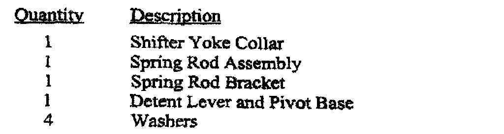

Recall - A/T Secondary Shifter Detent Installation: Overview
September 2002Safety Recall No. B02
Floor Shifter Secondary Detent System
Models
1993-1998 (ZJ) Jeep(R) Grand Cherokee
1993 (ZJ) Jeep(R) Grand Wagoneer
NOTE:
This recall applies only to the above vehicles equipped with an automatic transmission.
IMPORTANT:
Some of the involved vehicles may be in dealer used vehicle inventory. Dealers should complete this recall service on these vehicles before retail delivery. Dealers should also perform this recall on vehicles in for service. Involved vehicles can be determined by using the DIAL VIP System.
Subject:
When a driver has not placed the shifter lever fully into the "Park" position on about 1,500,000 of the above vehicles, the vehicle may unexpectedly move rearward after seeming to be stable. Unintended rearward movement of the vehicle could injure those in and/or near the vehicle.
Repair
A secondary detent system must be installed onto the floor shifter assembly.
Parts Information

Each package contains the components shown.
Each dealer to whom vehicles in the recall were invoiced will receive enough Floor Shifter Detent Packages to service about 5% of those vehicles.
Completion Reporting and Reimbursement
Claims for vehicles that have been serviced must be submitted on the DIAL System. Claims submitted will be used by DaimlerChrysler to record recall service completions and provide dealer payments.
Use the labor operation number and time allowance shown.
Add the cost of the recall parts package plus applicable dealer allowance to your claim.
NOTE:
See the Warranty Administration Manual, Recall Claim Processing Section, for complete recall claim processing instructions.
Parts Return
Not applicable.
Dealer Notification and Vehicle List
All dealers will receive a copy of this dealer recall notification letter by first class mail. Two additional copies will be sent through the DCMMS, and the MDS2 will be updated to include this recall in the near future. Each dealer to whom involved vehicles were invoiced will receive a list of their involved vehicles. The vehicle list is arranged in Vehicle Identification Number (VIN) sequence. Owners known to DaimlerChrysler are also listed. The lists are for dealer reference in arranging for service of involved vehicles.
DIAL System Functions 53 and VIP
All involved vehicles have been entered to DIAL System Functions 53 and VIP for dealer inquiry as needed
Function 53 provides involved dealers with an updated VIN list of their incomplete vehicles. The customer name, address and phone number are listed if known.
Completed vehicles are removed from Function 53 within several days of repair claim submission. To use this system, type "53" at the "ENTER FUNCTION" prompt, then type "ORDB02".
Owner Notification and Service Scheduling
All involved vehicle owners known to DaimlerChrysler are being notified of the service requirement by first class mail. They are requested to schedule appointments for this service with their dealers. A copy of the owner letter is included.
Enclosed with each owner letter is an Owner Notification Form. The involved vehicle and recall are identified on the form for owner or dealer reference as needed.
Dealers are encouraged to consider alternative scheduling and servicing approaches for this recall. This repair does not require hoists or other full service facility special equipment and is a DaimlerChrysler Mobile Service approved repair.
Vehicle Not Available
If a vehicle is not available for service, let us know by filling out the pre-addressed Owner Notification Form or describe the reason on a postcard and mail to:
DaimlerChrysler Corporation
CIMS 482-00-85
800 Chrysler Drive East
Auburn Hills, Michigan 48326-2757
Additional Information
If you have any questions or need assistance in completing this action, please contact your Zone Service Office.
Customer Services Field Operations
DaimlerChrysler Corporation